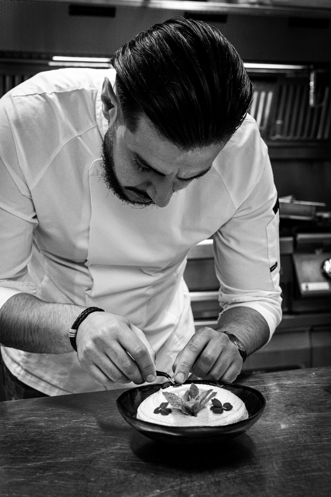
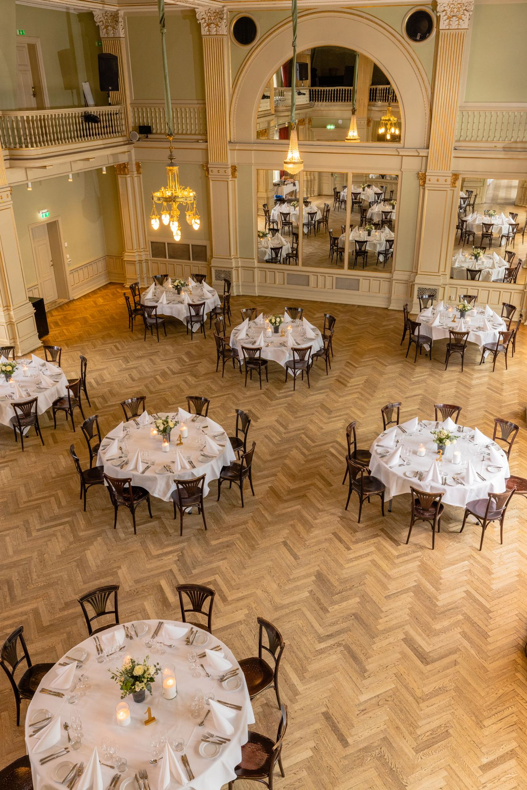

Concept for OCCO Dinner Club. Not the live website; dates and some texts are examples.
Home / About
About OCCO
Dinner Club
OCCO is a Lebanese restaurant and dinner club in Malmö's Hippodromen building. The food is made for sharing, and the evening comes with dancers, magicians and live music.

The kitchen
Cold and warm mezze, platters and the grill, served for the whole table. Both set menus can be made vegetarian or vegan, and we cater for offices, parties and homes.
See the menuBest Lebanese Restaurant in Sweden 2022–2023
The building
Hippodromen was finished in 1899 as a circus building and later became a theatre. OCCO is at Kalendegatan 12, and Spegelsalen is upstairs at 12B.
Private events and Spegelsalen
The wine
Wine from Lebanon, from Chateau Musar and Chateau Ksara to our own Occo Red and Occo Rosé. Sommelier Simon Axéll-Thoor holds tastings.
{{ w }}
Work with us
See open roles on the Careers page, or write to info@occorestaurant.com.
Careers